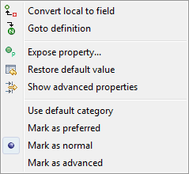

The Property Pane displays properties and events of the selected components and provides editable text fields, lists and other controls to allow you to edit properties and events. Select the control in the Component Tree or on the Design View to display its properties in the Property Pane. Once visible in the Property Pane, these values can be edited.
When multiple controls are selected, all of their shared properties are listed in the Property Pane. If not all the selected controls have the same value for a property, the property editor in the Property Pane will be blank.
By default, the Property Pane displays normal properties.
Preferred properties are shown in bold and expert properties
are shown in italics (click the Show advanced properties
 button to reveal them). A gray background indicates a property set
to its default value while a white background indicates a property
that has been set to a non-default value. Click the Restore
default value
button to reveal them). A gray background indicates a property set
to its default value while a white background indicates a property
that has been set to a non-default value. Click the Restore
default value
 button to set a property back to its default value.
button to set a property back to its default value.
You can select a property by clicking on the property title or value. When a property is selected, an editor is displayed instead of the value, so you can change it value. In most property editors Enter should be used to apply the value, and Esc to return to the previous value. If you select some property, you can use the arrow keys to navigate between properties.
The Property Pane supports simple properties such as Strings and ints and complex properties that consist of several other properties, such as layouts and layout datas. Complex properties are displayed with a plus or minus sign before the title. You can expand/collapse complex properties in several different ways:
-
double click on the property title or value
-
single click on plus or minus sign
-
select property and press to expand, to collapse
Some properties, such as
strings,
colors,
fonts and
images, provide a custom
property editor which can be access by clicking the
 button.
button.
The state of a property (expanded or collapsed) is preserved between selections of controls, so if you expand the property “style” for one control and then select another control, the property “style” will remain expanded, so you will able to quickly change the style value for several properties without needing to expand it again and again. Once you decide, that you don’t need to change the style, you can collapse the property “style” and save space for other properties.
The Property Pane supports selection properties, i.e. properties, whose values should be selected from some list. For example “type” property of complex “style” property for Buttons is such a property. You can change its value in the following ways:
-
double click on the property value or for changing value to next value in list (or first value, if current value is the last);
-
select property and press Space to expand list and then use arrows to change value;
-
select property and press Delete to change value to default.
Right-click on the Property Pane to access the property pane context menu.